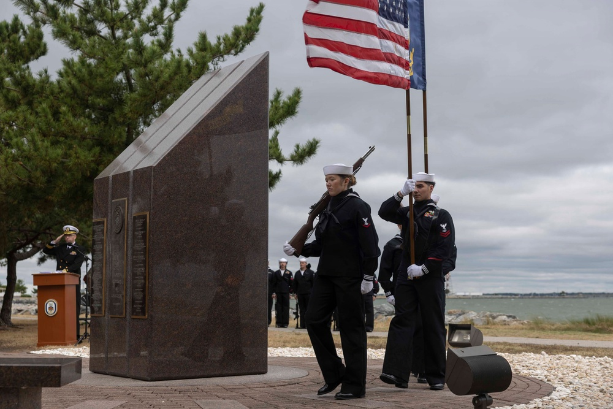

Mass Communication Specialist 2nd Class Oscar Pichardo · DVIDS 10007170 · Public domain · Sailors assigned to USS Cole parade the colors during a remembrance ceremony at Naval Station Norfolk. Photo taken Oct. 12, 2026.
DVIDS
Cole's crew marked 26 years since the Aden bombing at the ship's memorial in Norfolk
The crew of USS Cole held a remembrance today at the USS Cole Memorial on Naval Station Norfolk. The Navy said the ceremony included a wreath-laying, a reading of the names of the 17 sailors killed, a ceremonial bell, a three-volley rifle salute, and Taps. On Oct. 12, 2000, while the destroyer was refueling in Aden, Yemen, a small boat detonated against the port side at 11:18 a.m. local time, ripping a 40-by-60-foot hole near the waterline. Seventeen sailors were killed and nearly 40 were injured. Commanding officer Cmdr. Chris Gostel said the ship's legacy is part of everything the crew does. Cole remains an active warship.
DVIDS · Read source →